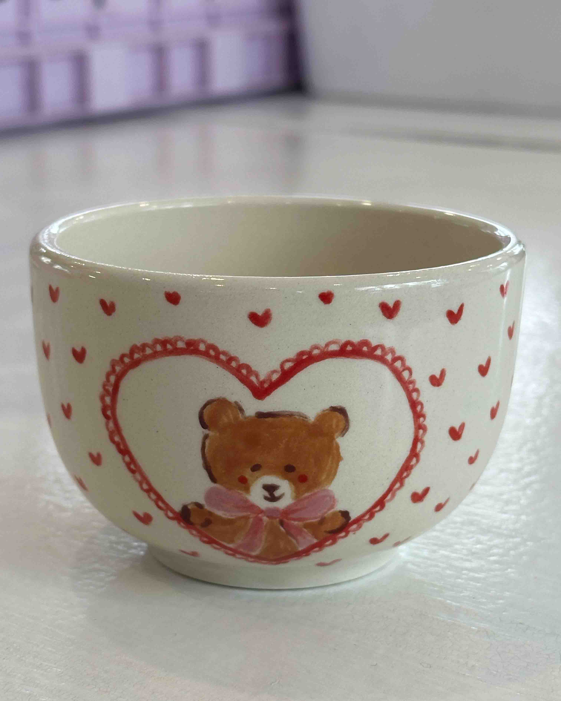
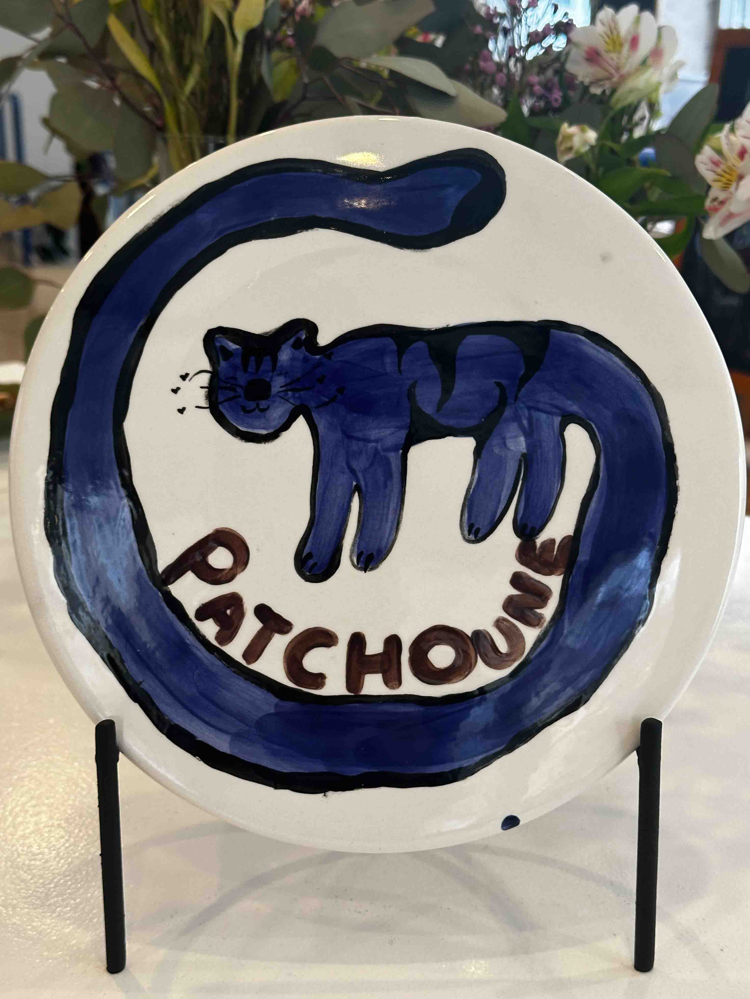
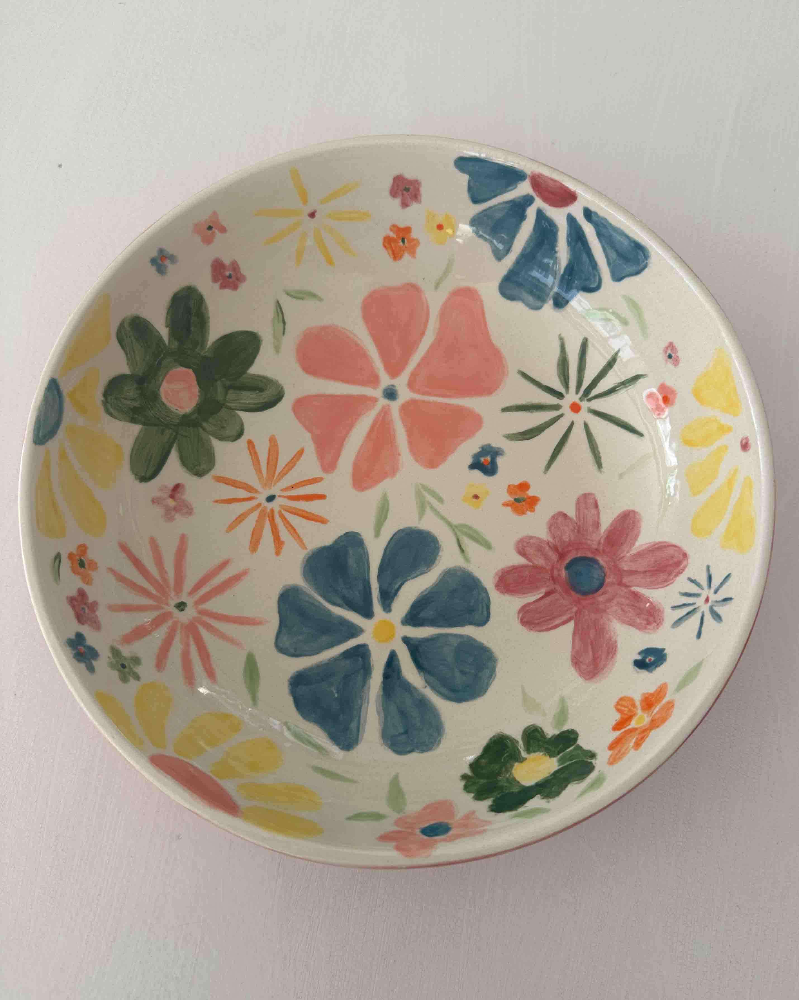
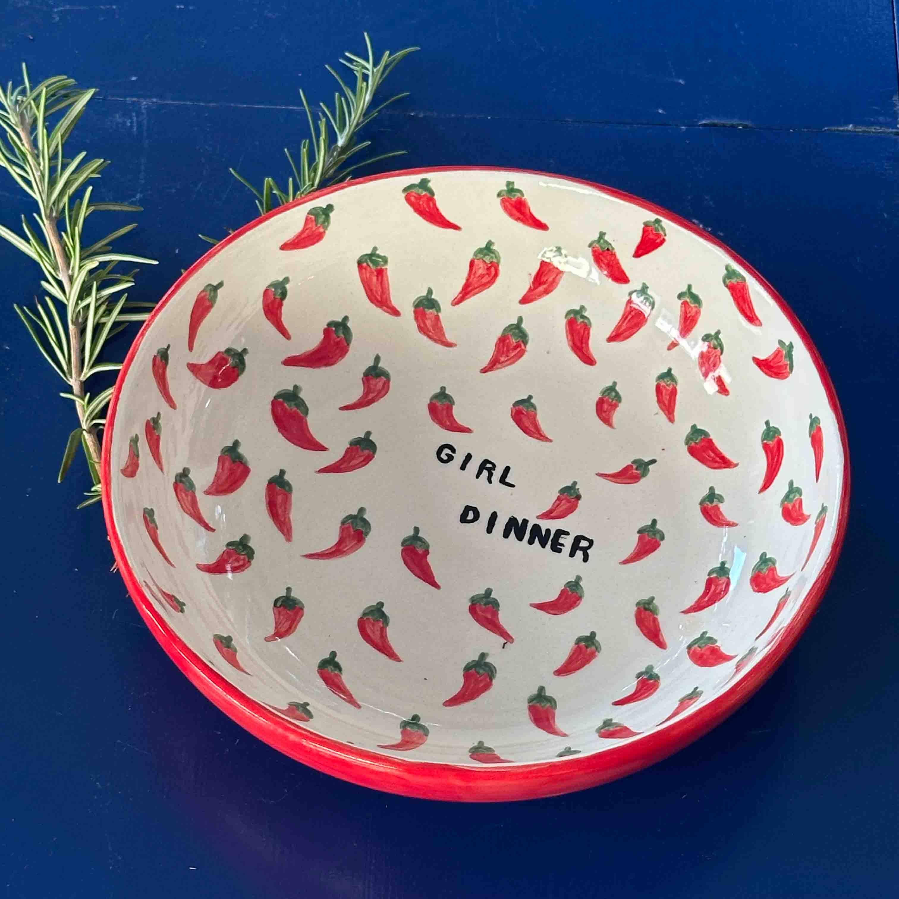
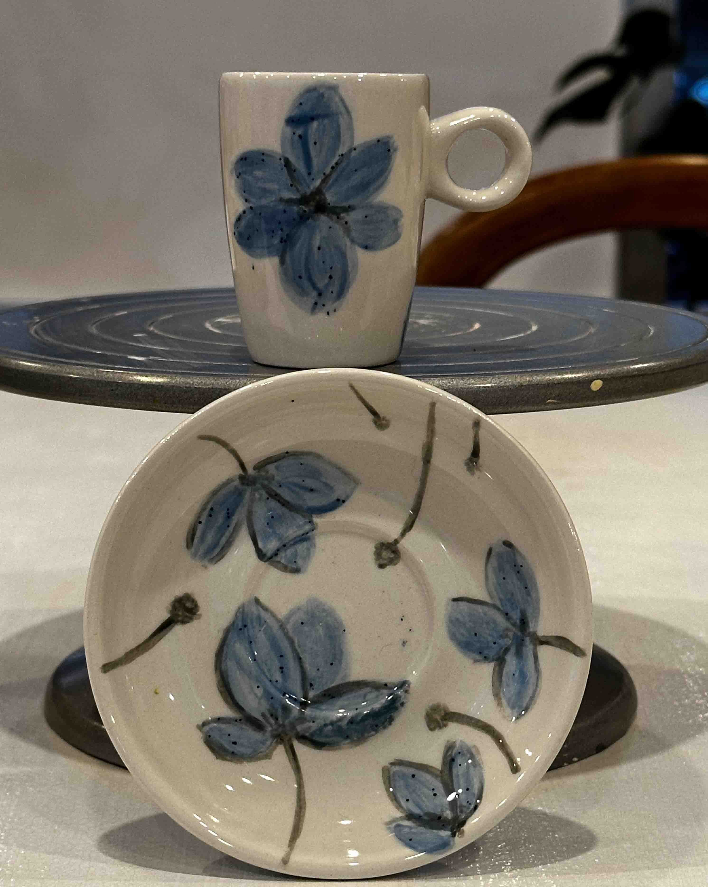
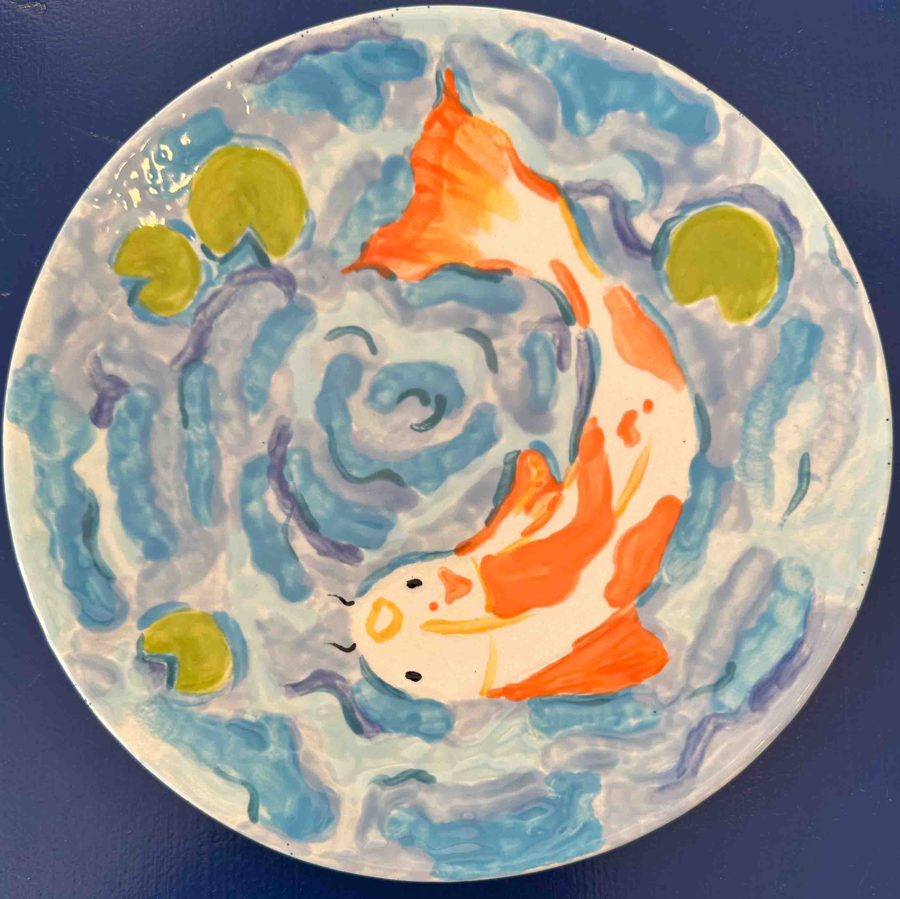
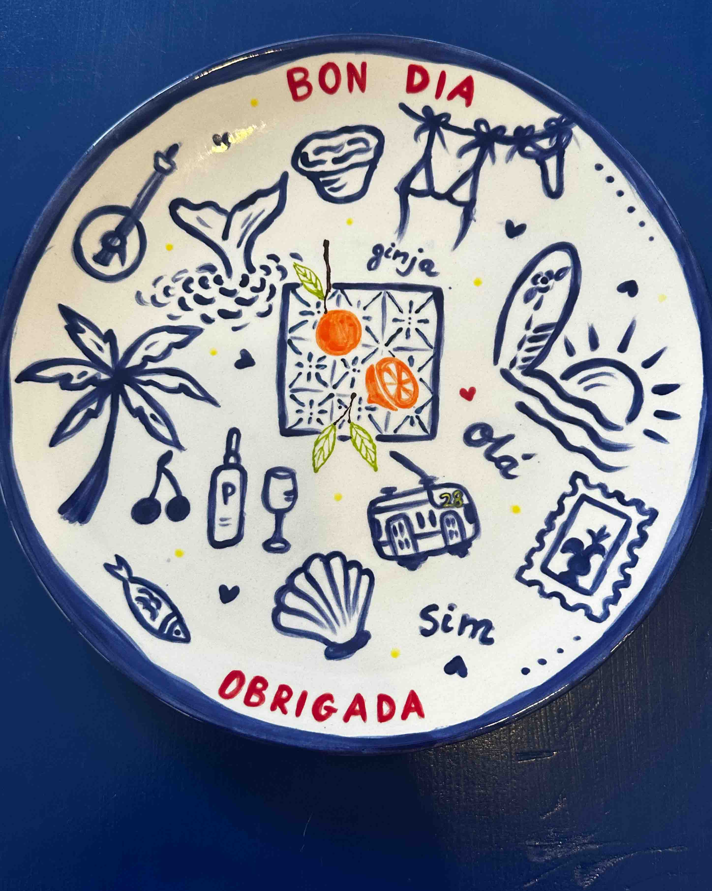
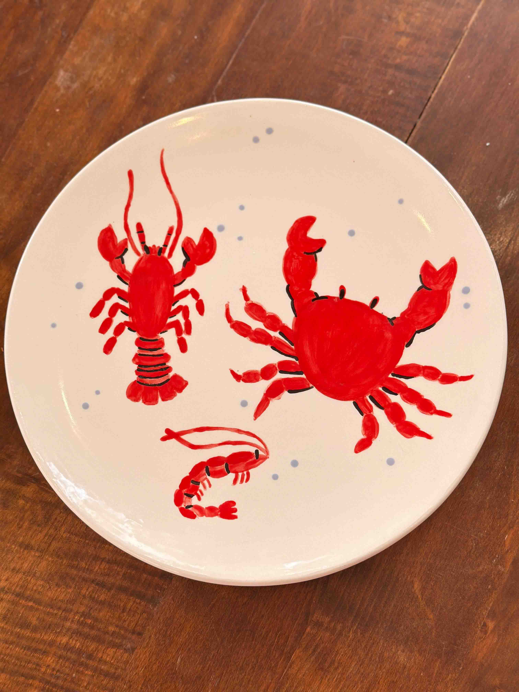
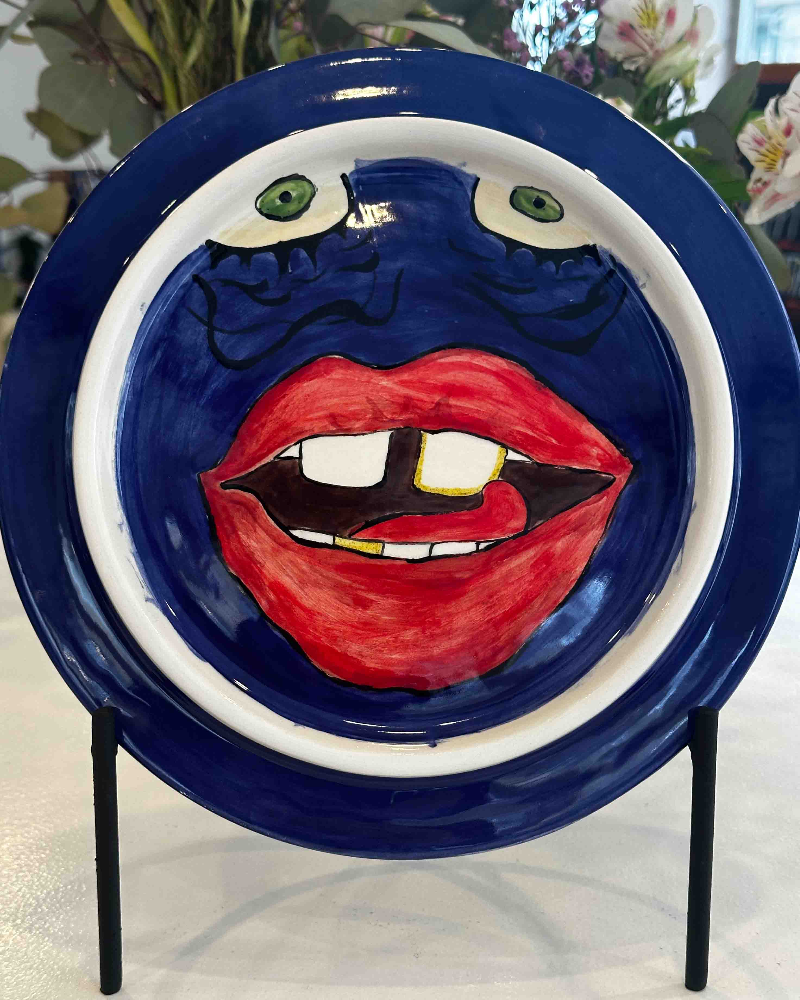
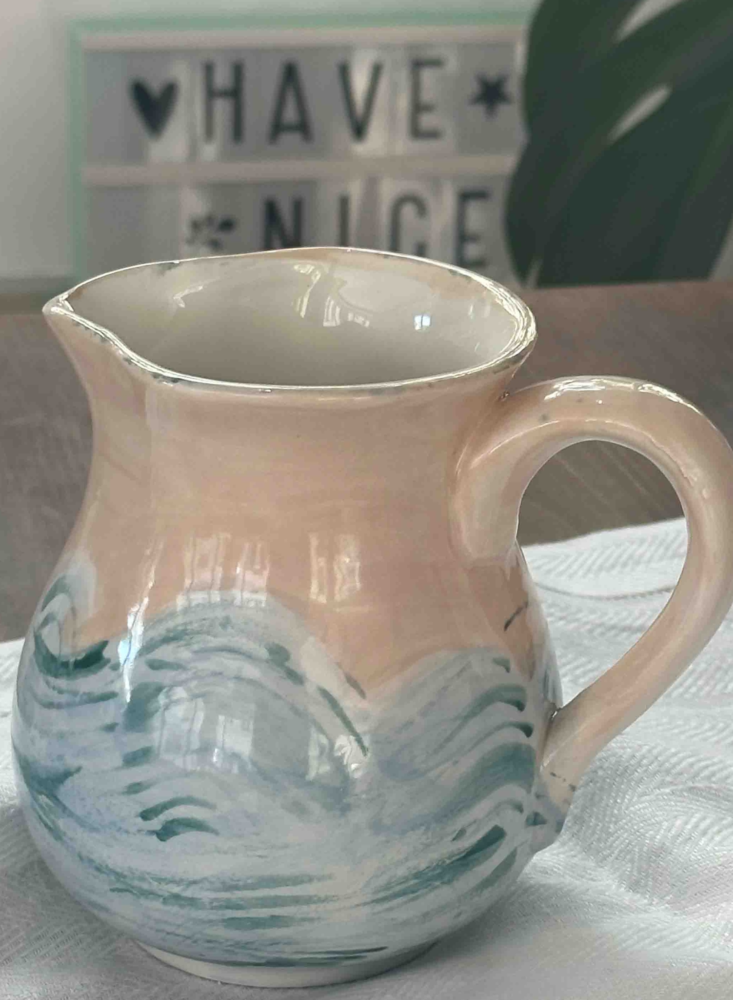

Take a look at some of the unique hand-painted ceramics created by our community in the studio.














Everything you need to know about our studio, the painting process, and more.
Visit FAQ